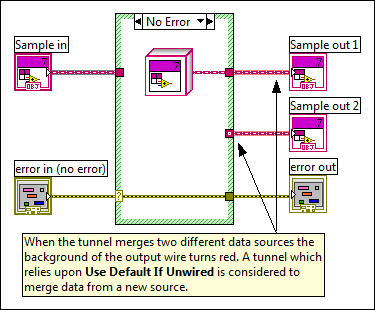

This tunnel or shift register lies along the path between a dynamic input front panel terminal and the dynamic output front panel terminal. All of the data paths that lead to the dynamic indicator must originate at the dynamic control.
This error occurs when one or more input terminals originate at a different source or the wire passes through a function that does not guarantee run-time type preservation. This error also can occur if you select Use Default If Unwired from the shortcut menu to connect the dynamic front panel input terminal to the dynamic front panel output terminal.

To correct this error, you must actually wire the tunnel in all cases for dynamic controls and indicators.